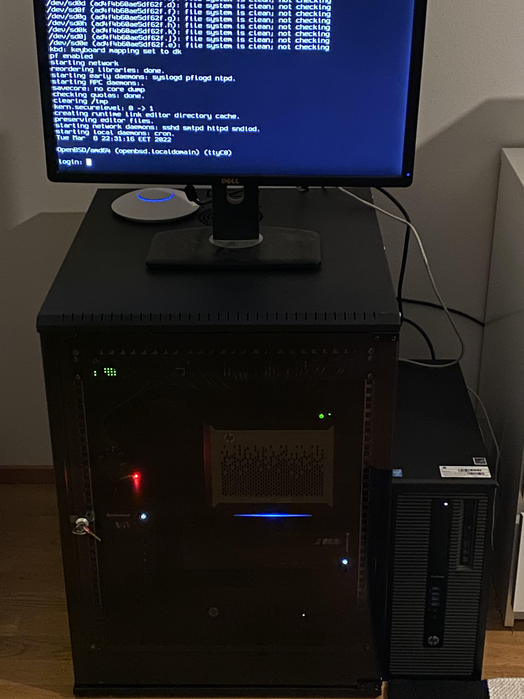

This page is dedicated to my homelab. This is where I do all the learning by running services and doing experiments.
Every desktop in my lab runs Proxmox in a cluster. I host stuff from SearXNG to Nextcloud, all in k3s. Running my homelab has taught me alot about stuff like Ansible, Docker, k3s and automation.
My firewall/router OS of choice is OPNsense, which runs virtualized in my Proxmox cluster.
There is a Cisco Catalyst 2960-X, a TP-Link 1Gbps managed switch and a patch panel on top of the rack. I use the OPNsense box and the switches together to learn about network administration.